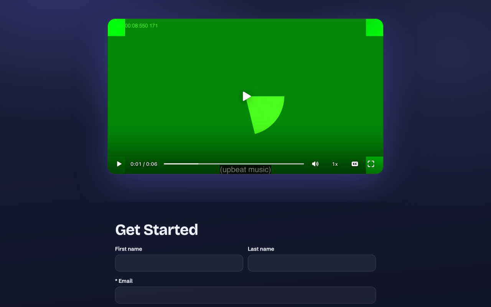
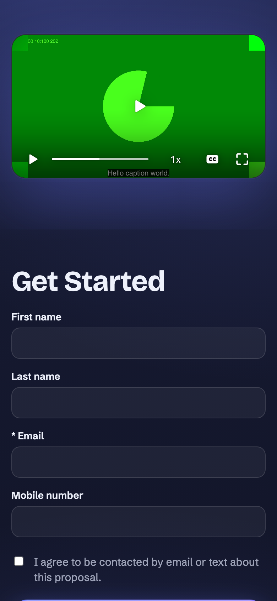
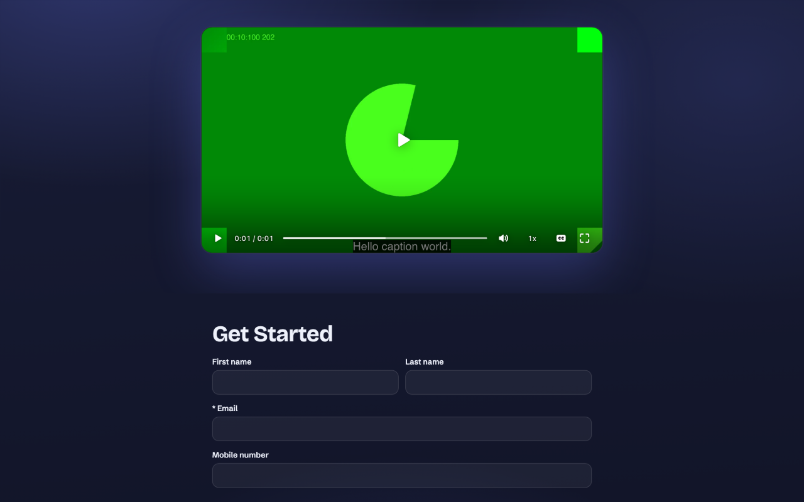
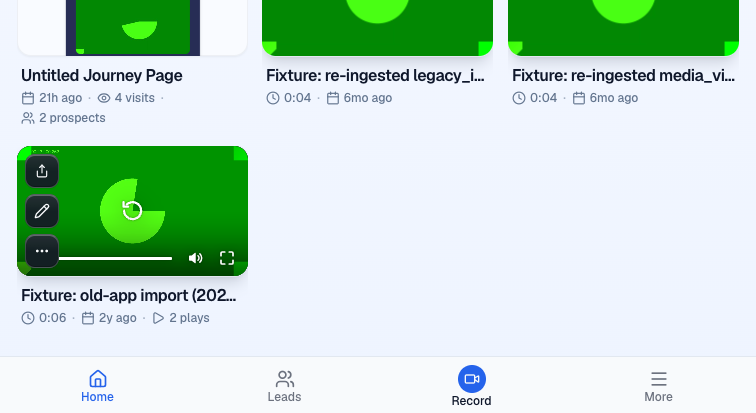
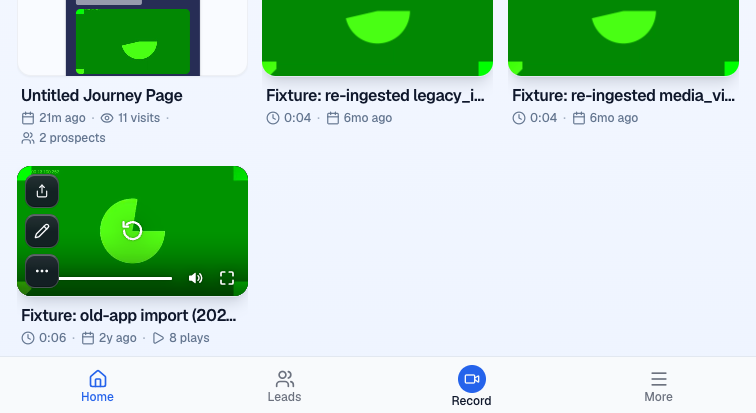

BLOCKED. Safari and the remaining owner/speech evidence need follow-up.





> *This was generated by AI during implementation.* ## Proof Verdict: BLOCKED. Required proof remains incomplete. Head d2d46cb9f0a2d969f91b6531f1be3edfd985ef37. Issue #1552. Routing steer. William has not signed off. Waved through: none. Preview https://pr-1635.clarity-video.workers.dev Report https://willayam.github.io/clarity-design-previews/proof-1635/ This continuation replaces the earlier BLOCKED report, retaining its completed checks at the same head. It establishes no new code defect. Safari, owner captions through the existing controls, and synchronization with spoken audio remain unproven. ### Criterion 1. Owner playback Authenticated doctor passed with the exact head. The owner library player exposed one subtitle choice through `mux-video.textTracks`, initially disabled. With unknown language it was `Captions`; the underlying native list retained disabled Mux English for fallback. The previous verifier established Swedish at this head. The library mini player has no visible CC control. The trim editor hides the player controls. I reproduced the missing library CC control on PR #1590, so this is a baseline limitation, not a new failure. Screenshots of both owner players are in the report. The full public player uses a CC toggle, not a language menu. An owner captions-on screenshot obtained through its own controls is still missing. ### Criterion 2. Signed-out public playback Clicked the public Play and CC controls. The sole subtitle choice was Swedish, mode showing. At playback time 3 seconds the active cue was `Hello caption world.`, with cue bounds 1–5 seconds. Screenshots at 1440×900 and 390×844 CSS pixels show those words. These are seeded mock words, not a transcript of the fixture's audio. The earlier verifier's descriptor and revision-bearing VTT requests both returned 200. Availability is requested at playback time. Without seeded words, this run observed descriptor 404 and Mux English. The public HTML does not embed the availability or words. ### Criterion 3. Language After changing only the mock speech language to NULL, a fresh page exposed `label=Captions`, `language=und`, `mode=disabled`. Swedish was the sole subtitle choice before that change. ### Criterion 4. Promoted clip Read the current manifest digest, then saved a 2–4 second trim through `videos_edit`. The initial null-digest attempt returned 409 stale_revision without accepting the edit. The corrected request returned 200, accepted=true and clipPending=true. Public captions returned 404 while pending. A later videos_get returned clipPending=false and clip playback ID `nHcBWSZ02Uub9fufDYWj00lVUiy1r43Om8L8tZ142qzrY`, with span 2–4 seconds. The page player and descriptor used that same playback ID. The VTT was: ```text WEBVTT 00:00:00.000 --> 00:00:02.000 Hello caption world. ``` At clip time 1 second that cue was active and visible, mode showing, with media.error=null. The report includes its screenshot. This proves rebasing against the playback clock. It does not prove alignment with speech. The baseline fixture is an animation whose Mux caption is `(upbeat music)`, so the permitted fixture seed cannot provide the requested spoken-word comparison. ### Criterion 5. Fallback Without live words, Mux English remained available. For failed-VTT recovery, I enabled captions on the original, then injected a temporary page-local CSP permitting blob and Mux media but blocking same-origin media. I changed the loaded custom VTT URL by adding `proof_block=1` to force its reload. The browser recorded a media-src violation for that VTT. The custom track disappeared, the sole subtitle choice became English in showing mode, and media.error stayed null. Playback advanced from 1 second to 6.079999 seconds. No production policy or server configuration changed. ### Criterion 6. Access Two disposable mock pages copied the fixture document. The unpublished page `/page/p1635u` returned 404 for HTML and captions. The locked page `/page/p1635p` returned 200 for the password gate and 404 with an empty body for captions before unlock. Navigating both signed out yielded zero video players and zero tracks. The locked page had a password input. Both pages were removed during cleanup. ### Criterion 7. Before and page parity Before preview https://pr-1590.clarity-video.workers.dev/page/4uxp6b After preview https://pr-1635.clarity-video.workers.dev/page/4uxp6b The same existing mock Mux fixture on #1590 showed Mux English and `(upbeat music)` with CC on. The resource log contained zero caption-endpoint requests. No speech seed was needed or written to #1590. The report includes Before and After screenshots. After resetting the trim, fetched HTML from both previews. With script elements excluded and the one new `data-captions-url` attribute removed, the remaining HTML was byte-identical. Full HTML is not byte-identical because the inline script changed. The inline script content grew from 22,149 to 28,708 UTF-8 bytes, an increase of 6,559 bytes, about 29.6%. The external script tag was unchanged. ### Criterion 8. Safari BLOCKED. Real Safari access failed with `Sky Computer Use native pipe startup failed`. I did not retry Playwright WebKit, whose missing HLS support was established by the earlier verifier. Neither original nor promoted-clip native Safari timing is proven. ### Tests retained from the earlier verifier The continuation brief says not to repeat completed checks at this head. I read the saved test summaries and retained them: ```text editor/tests/caption-player.test.ts editor/tests/block-rendering-parity.test.ts editor/tests/video-player-mux-video.test.tsx Test Files 3 passed (3) Tests 63 passed (63) workers/workspace-tree/tests/video-captions.test.ts Test Files 1 passed (1) Tests 15 passed (15) ``` No red-to-green test is required for this enhancement. This run installed frozen dependencies, checked the preview database config, ran authenticated doctor, and exercised the Chromium flows above. Network failures were retried, including the failed language update. ### Writes and cleanup This continuation's explicit database writes were confined to clarity-pr-1635-auth and mock fixtures: - Inserted one take_speech row and one take_speech_chunks row for asset `6915648c-b29f-56d0-a9fe-53c6eb285cf7`, with the prior verifier's placeholder words and Swedish language. - Changed that speech row's language to NULL for the neutral-label check. - Saved the 2–4 second trim through videos_edit, creating normal edit/job history and a promoted Mux clip. Cleanup reset the trim successfully, accepted=true and clipPending=false. Normal history remains. - Inserted two journey_pages, two public_page_routes and one journey_page_publications row for the unpublished and locked cases. - Deleted the two speech rows and all five access-fixture rows. The cleanup import completed successfully and reported seven rows written. Playback and page visits also emitted ordinary preview analytics/RUM requests on #1635 and #1590. No explicit fixture SQL or edit action ran on #1590. No production or staging writes, branch changes, pushes, or merges occurred. The earlier verifier's own seed/trim/reset/cleanup inventory remains in https://github.com/Clarity-Video-HQ/clarity/issues/1552#issuecomment-6574864413. **PR:** https://github.com/Clarity-Video-HQ/clarity/pull/1635